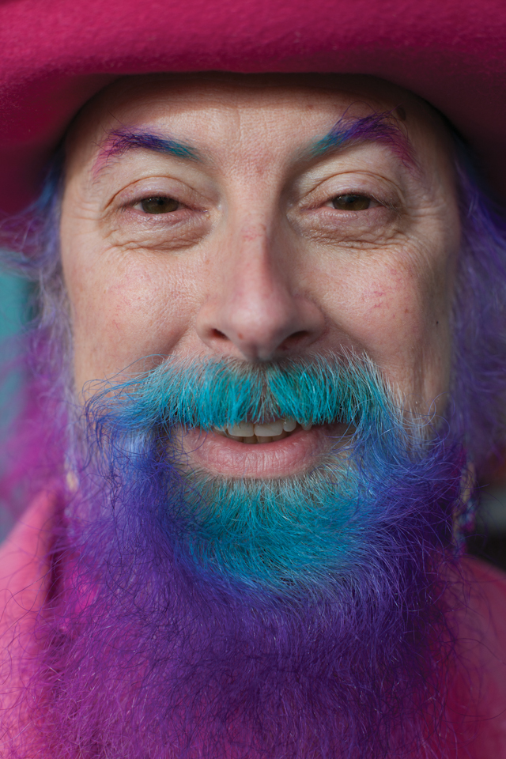
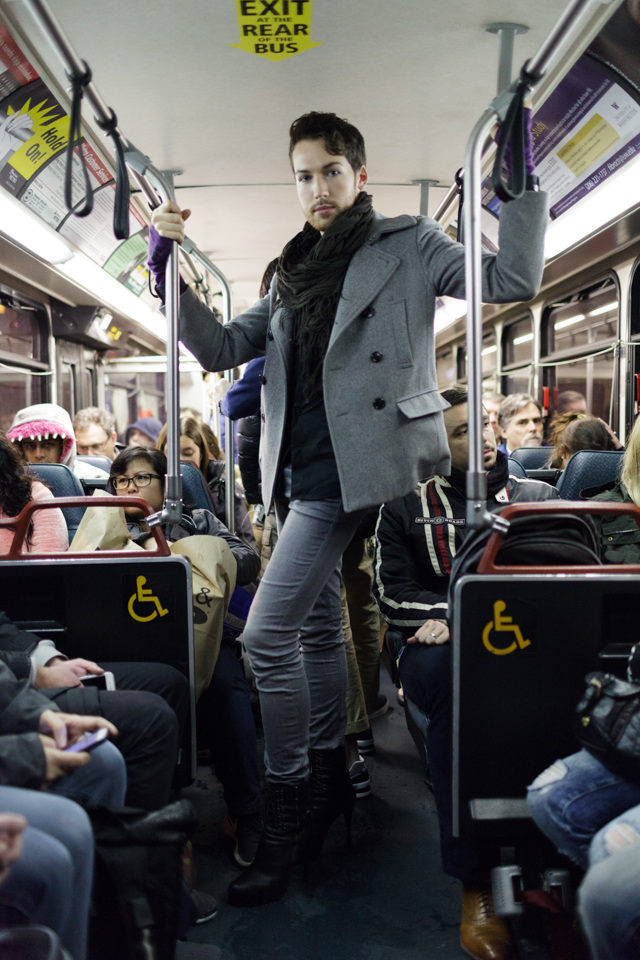
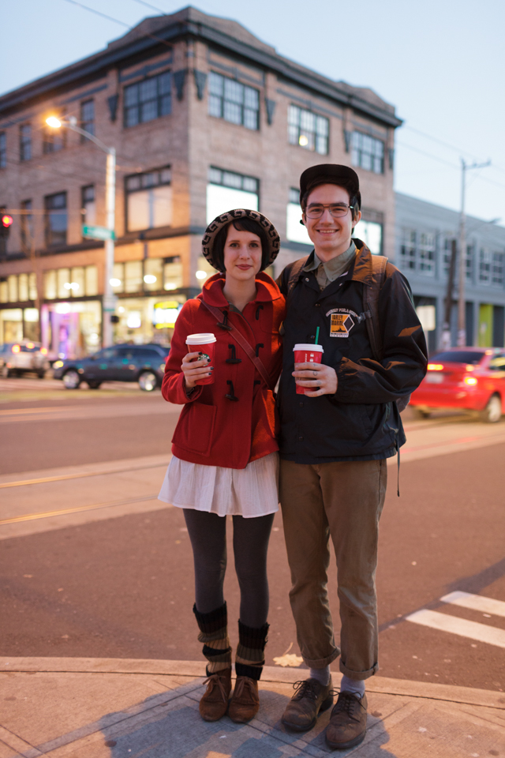
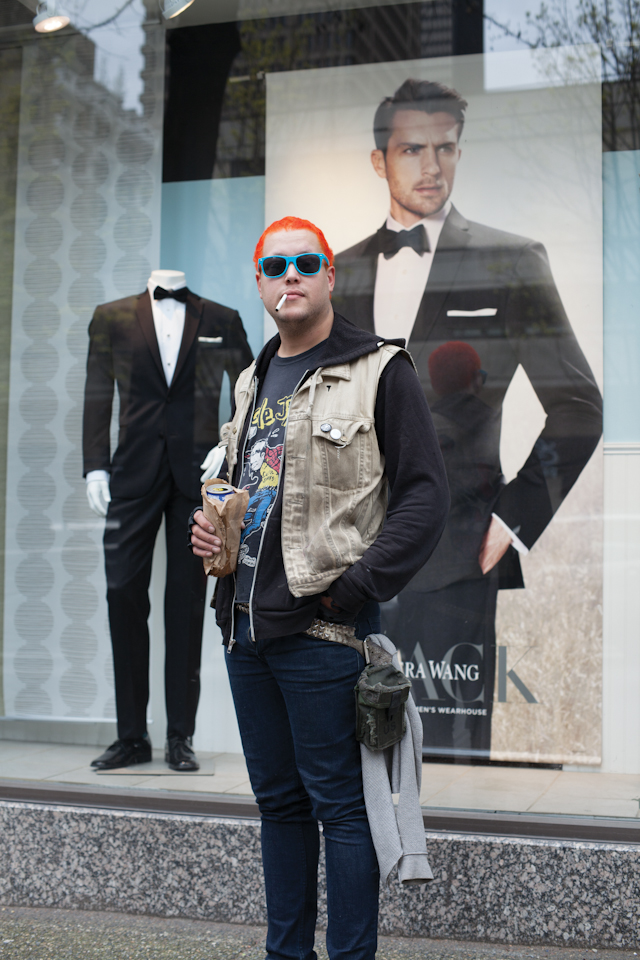

Through its content, Humans of Seattle seeks to create connections and foster empathy by highlighting the common humanity that exists among individuals, regardless of their backgrounds or circumstances. The page aims to provide a platform for people to share their experiences, celebrate diversity, and promote understanding within the local community.
Camera Settings
| Colorful Beard | Bus Person | Street Couple | Grung Drummer |
|---|---|---|---|
| ISO 320 | ISO 3200 | ISO 1250 | ISO 160 |
| 1/500sec | 1/160sec | 1/50sec | 1/250sec |
| f 1.4 | f 1.8 | f 2.0 | f 1.4 |



